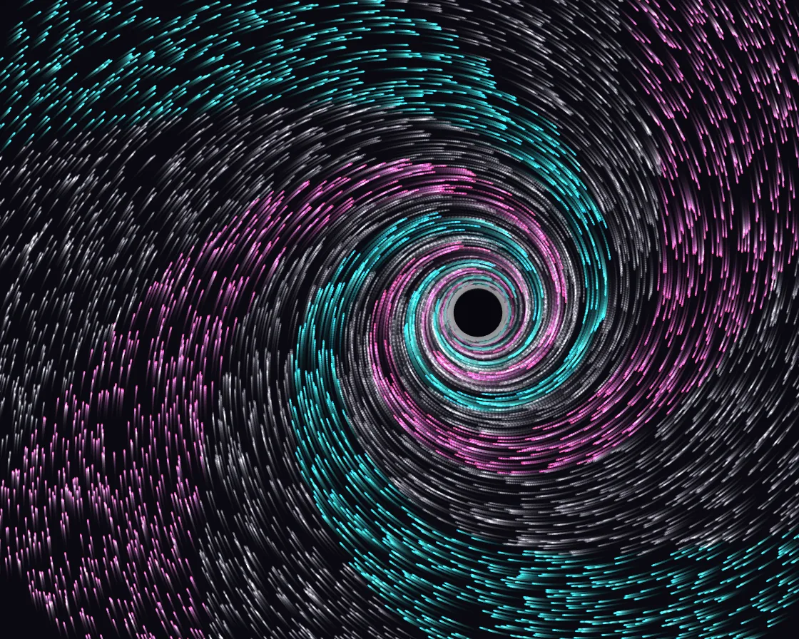

Vortex drain
Vortex drain is a Canvas effect: lamb–Oseen vortex plus inflow; differential rotation winds colour into arms. One plain JavaScript file with no dependencies; add it with npx motion-library add vortex.

Open it live, tune it and copy the code
What is Vortex drain?
Thousands of streaks spiral into a drain that follows the cursor, their colours wound into spiral arms.
How does Vortex drain work?
A Lamb–Oseen vortex: tangential swirl falling off as 1/r outside a smooth core and a weak inward pull; particles keep their birth sector’s colour, which inner rings shear into spirals.
How do I add Vortex drain to my website?
- In your project folder, run
npx motion-library add vortex. It writesanimations/vortex.js. Needs Node 18 or newer. - Import it and call it with a container element that has a size:
import fx from './animations/vortex.js'; const stop = fx(document.querySelector('#hero')); - Call
stop()to clean up, for example when a component unmounts.
Every setting below is also a flag, so you can install it already tuned: npx motion-library add vortex --count 20000.
What settings can I tweak?
| Setting | Flag | Default | Range | Step |
|---|---|---|---|---|
| Particles | --count | 9000 | 1000 to 20000 | 500 |
| Swirl | --swirl | 1 | 0.2 to 3 | 0.05 |
| Pull | --pull | 0.3 | 0 to 1.5 | 0.05 |
Specifications
- Renderer
- Canvas 2D
- Category
- Simulation
- Dependencies
- None
- File size
- 4.4 KB, unminified
- Interactive
- Yes: it responds to the pointer
- Reduced motion
- Respects prefers-reduced-motion
- Licence
- MIT-0: use it anywhere, no credit needed
Source code
// A point vortex with a drain. Every particle feels two velocities around the vortex centre: a tangential swirl that
// grows as 1/r outside a small smooth core (a Lamb–Oseen vortex), and a weaker radial pull inward, so every path is a
// tightening spiral. Particles are coloured by the sector they were born in; inner rings turn much faster than outer
// ones, so the sectors are wound into spiral arms, like dye stirred into a drain. At the core particles are swallowed
// and reborn at the rim, still in their sector colour. The vortex follows the cursor (or wanders on its own).
const PARAMS = { count: 9000, swirl: 1, pull: 0.3 };
export default function (stage) {
const canvas = document.createElement('canvas');
canvas.style.cssText = 'position:absolute;inset:0;width:100%;height:100%;display:block';
stage.append(canvas);
const ctx = canvas.getContext('2d');
const reduce = matchMedia('(prefers-reduced-motion: reduce)').matches;
let W = 0, H = 0, D = 1;
const BG = '#06060c';
const resize = () => { D = Math.min(devicePixelRatio, 2); W = stage.clientWidth || 1; H = stage.clientHeight || 1; canvas.width = Math.round(W * D); canvas.height = Math.round(H * D); ctx.setTransform(D, 0, 0, D, 0, 0); ctx.fillStyle = BG; ctx.fillRect(0, 0, W, H); };
const ro = new ResizeObserver(resize); ro.observe(stage); resize();
const n = Math.max(100, Math.round(PARAMS.count));
const P = new Float32Array(n * 2), S = new Uint8Array(n);
const colours = ['#27d9ff', '#ff4f9a', '#f3f1ff'];
let vx = W / 2, vy = H / 2;
const spawn = (i, anywhere) => {
const R = Math.hypot(W, H) * 0.55, a = Math.random() * 6.2832;
const r = anywhere ? Math.sqrt(Math.random()) * R : R * (0.85 + Math.random() * 0.25);
P[i * 2] = vx + Math.cos(a) * r; P[i * 2 + 1] = vy + Math.sin(a) * r;
S[i] = [0, 2, 1, 2][Math.floor(a / 6.2832 * 8) % 4]; // sectors: cyan, white, pink, white, ...
};
for (let i = 0; i < n; i++) spawn(i, true);
let tx = W / 2, ty = H / 2, lastPointer = -1e9;
const pm = e => { const r = canvas.getBoundingClientRect(); tx = e.clientX - r.left; ty = e.clientY - r.top; lastPointer = performance.now(); };
stage.addEventListener('pointermove', pm);
const segs = colours.map(() => []);
let raf, last = performance.now(); const t0 = last;
function frame(now) {
const dt = Math.min(0.033, (now - last) / 1000) * (reduce ? 0.08 : 1); last = now;
const t = (now - t0) / 1000;
if (now - lastPointer > 2500) { tx = W * (0.5 + 0.1 * Math.sin(t * 0.31)); ty = H * (0.5 + 0.08 * Math.sin(t * 0.47 + 1)); }
const k = 1 - Math.exp(-dt * 4); vx += (tx - vx) * k; vy += (ty - vy) * k;
ctx.globalCompositeOperation = 'source-over'; ctx.globalAlpha = reduce ? 0.05 : 0.12; ctx.fillStyle = BG; ctx.fillRect(0, 0, W, H);
const m = Math.min(W, H), G = PARAMS.swirl * m * m * 0.05, core = m * 0.035, sink = m * 0.03;
for (const s of segs) s.length = 0;
for (let i = 0; i < n; i++) {
const x = P[i * 2], y = P[i * 2 + 1], dx = x - vx, dy = y - vy, r2 = dx * dx + dy * dy, r = Math.sqrt(r2) + 1e-3;
// Lamb–Oseen profile: v_t = Γ/r · (1 − e^{−r²/rc²}); radial pull scaled from the same profile
const prof = (1 - Math.exp(-r2 / (core * core))) / r, vt = G * prof, vr = -PARAMS.pull * G * prof * 0.6 - 6;
const ux = dx / r, uy = dy / r;
const nx = x + (-uy * vt + ux * vr) * dt, ny = y + (ux * vt + uy * vr) * dt;
segs[S[i]].push(x, y, nx, ny);
P[i * 2] = nx; P[i * 2 + 1] = ny;
if (r < sink) spawn(i, false);
}
ctx.globalCompositeOperation = 'lighter'; ctx.lineWidth = 1.3; ctx.lineCap = 'round';
for (let c = 0; c < colours.length; c++) {
const s = segs[c]; ctx.strokeStyle = colours[c]; ctx.globalAlpha = c === 2 ? 0.28 : 0.8;
ctx.beginPath(); for (let j = 0; j < s.length; j += 4) { ctx.moveTo(s[j], s[j + 1]); ctx.lineTo(s[j + 2], s[j + 3]); } ctx.stroke();
}
// the eye
const g = ctx.createRadialGradient(vx, vy, 0, vx, vy, core * 2.2);
g.addColorStop(0, 'rgba(6,6,12,0.9)'); g.addColorStop(0.45, 'rgba(6,6,12,0.5)'); g.addColorStop(1, 'rgba(6,6,12,0)');
ctx.globalCompositeOperation = 'source-over'; ctx.globalAlpha = 1; ctx.fillStyle = g; ctx.fillRect(vx - core * 2.2, vy - core * 2.2, core * 4.4, core * 4.4);
raf = requestAnimationFrame(frame);
}
raf = requestAnimationFrame(frame);
return () => { cancelAnimationFrame(raf); ro.disconnect(); stage.removeEventListener('pointermove', pm); canvas.remove(); };
}